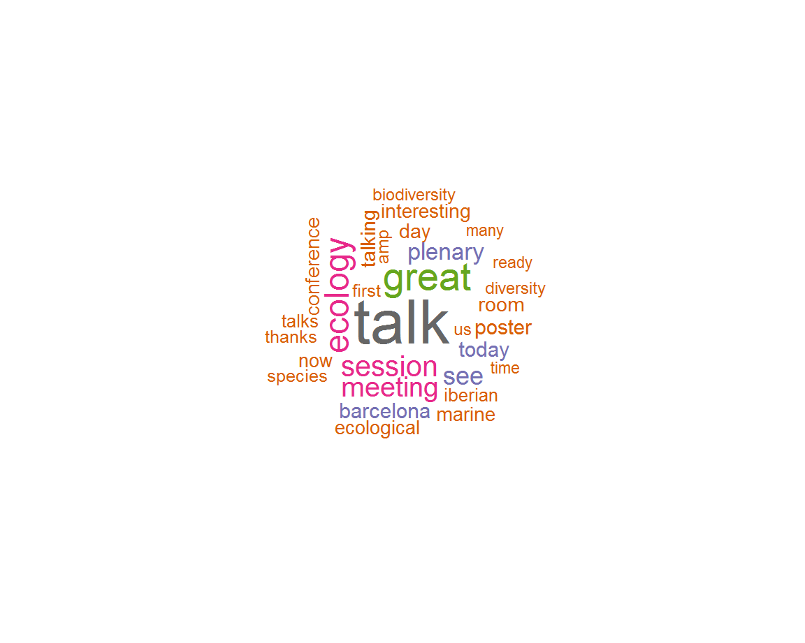
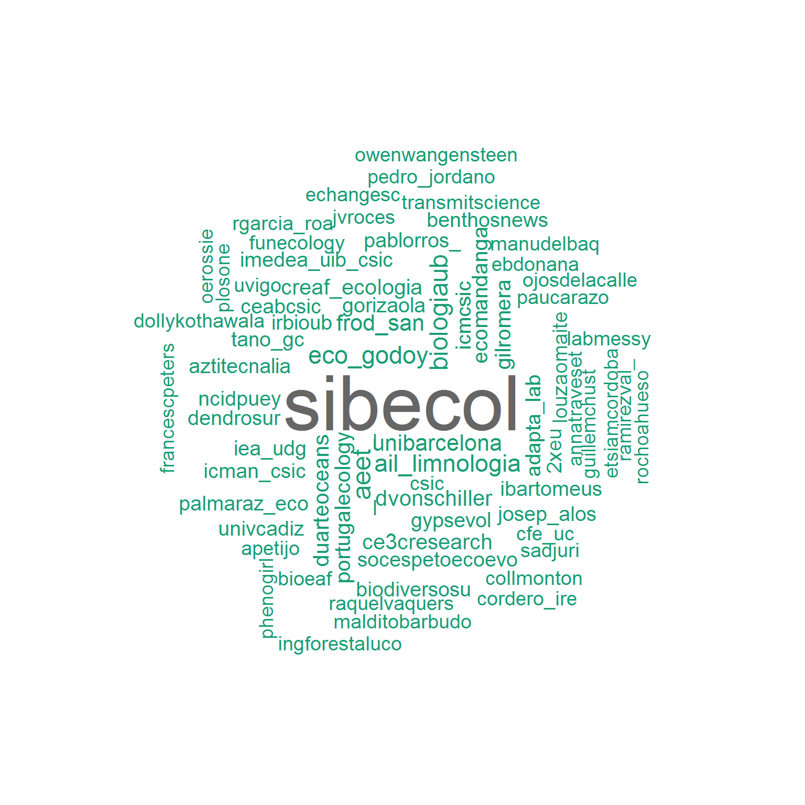

Home
Row
Chart 1
908Chart 2
224Chart 3
8756Chart 4
2308Row
Row
MOST LIKED
SIBECOL (@sibecol)
MOST RETWEETED
SIBECOL (@sibecol)
MOST RECENT
I finally found the fantastic drawing made by @gilromera during my talk on biodiversity and functional ecology of Ghanaian forests last week at #sibecol2019. Never had just a beautiful summary of my work before! Thank you!
Imma Oliveras (@olpetita)
Top tweets
Column
*** MOST LIKED ***
SIBECOL (@sibecol)
Today, more than 600 ecologists are joining to share their scientific knowledge in the 1st Iberian Ecological Society Meeting
SIBECOL (@sibecol)
What a great session and lineup of speakers at TS05 #SIBECOL2019 @sibecol Thanks ever so much to all them contributing superb talks on many aspects of ecological networks https://t.co/EJxV1WJKQs
Pedro Jordano (@pedro_jordano)
Slides here: https://t.co/S0PK3QswiG #SIBECOL2019 #rstats #rmarkdown #ReproducibleScience https://t.co/o3NzNSh5gm
F Rodriguez-Sanchez (@frod_san)
SIBECOL (@sibecol)
The risk of losing species interactions is higher than losing species - powerful talk by Jordi Bascompte, who waked the whole audience after a late night summarising how biodiversity works :) #sibecol2019 @_AEET_ @sibecol https://t.co/2kuinXun3v
Imma Oliveras (@olpetita)
Great to see Jordi Bacompte at his plenary talk #SIBECOL2019 on the architecture of Biodiversity @sibecol https://t.co/i5dTVMZPIB
Pedro Jordano (@pedro_jordano)
Ready for next weeks #SIBECOL2019 meeting. Together with @phenogirl we set up a thematic session on Ecological networks: addressing the complexity of multi-specific interactions. Thu, 7th Feb My talk will focus on things learnt about multiplexed ecological networks @sibecol https://t.co/CsBfxMaz1g
Pedro Jordano (@pedro_jordano)
Editing the last details of my plenary talk #SIBECOL2019 talking about multitrophic coexistence. I am trying to maintain the balance between generality and ecological complexity. Not easy task! https://t.co/XdUWXXv4jO
Oscar Godoy (@Eco_Godoy)
.@FrancescPeters : In 2019 we are celebrating the centenary of Prof.Ramon Margalef. Margalef was a mostly self- made scientist with an innate curiosity and ability to relate observations and derive theoretical trends and generalities. #SIBECOL2019
SIBECOL (@sibecol)
Heading back home after a great #SIBECOL2019 @sibecol meeting. I would like to thank many people for letting me know that my plenary talk was fun, and served to spend time thinking about core ideas in #ecology. See you in the next!
Oscar Godoy (@Eco_Godoy)
Thank you so much from the Twitter team
You have tweeted a lot and we may have missed some of your tweets, sorry in that case
SIBECOL (@sibecol)
Meet part of the new board of directors of the Spanish Association for Terrestrial Ecology (AEET) #SIBECOL2019 @ibartomeus @mabdelaziz_moha @ChristianSchob @GOrizaola https://t.co/dQ2ZwPxnMk
Ainhoa Magrach (@AinhoaMagrach)
#SIBECOL2019 is over. Thanks ever so much to all who made it possible. Megathanks for the Ecosistemas-Balaguer award that Ive shared with Prof Terradas Ill treasure the beautiful handcolored engraving, from GD Ehret, 1750 Meriana flore rubello Thank you Paco Lloret! @sibecol https://t.co/fIjbmqrrJZ
Pedro Jordano (@pedro_jordano)
Combining science and motherhood is not always easy, but Im very thankful to the assistance of Pilar and the @sibecol organization for helping me in attending the conference despite having a very young daughter! #SIBECOL2019 https://t.co/uTQnO07upp
Irene Mendoza (@phenogirl)
Alucinando con la charla de @GOrizaola acerca de qu ha pasado con la fauna, concretamente anfibios
Pablo Rodrguez-Ros (@pablorros_)
A picture is worth a thousand words and these two pics summarise very important moments of us as society at @ICMCSIC and at #SIBECOL2019 @IRBioUB @BiologiaUB @UniBarcelona https://t.co/lsqrwrUa2Q
SIBECOL (@sibecol)
Find the program here
SIBECOL (@sibecol)
Finished my last slide for #SIBECOL2019. With this plenary talk, I have realized how important is the work of #Ramon #Margalef for unifying fields in #Ecology. Impressive his legacy! @sibecol https://t.co/mo2XdFwXKG
Oscar Godoy (@Eco_Godoy)
We are back in #palaeoecology session at #SIBECOL2019 with @gilromera on fire!!! https://t.co/bPkTtEcQ3k
Encarni Montoya (@palaeoecology)
Column
*** MOST RETWEETED ***
SIBECOL (@sibecol)
Today, more than 600 ecologists are joining to share their scientific knowledge in the 1st Iberian Ecological Society Meeting
SIBECOL (@sibecol)
Find here all programs for oral talks, posters, etc
SIBECOL (@sibecol)
.@FrancescPeters : In 2019 we are celebrating the centenary of Prof.Ramon Margalef. Margalef was a mostly self- made scientist with an innate curiosity and ability to relate observations and derive theoretical trends and generalities. #SIBECOL2019
SIBECOL (@sibecol)
SIBECOL (@sibecol)
Less than two weeks!
SIBECOL (@sibecol)
SIBECOL (@sibecol)
Check the exhibition Women in Limnology at #SIBECOL2019: 8 panels highlighting past, present and future perspective of women limnologists #WomenInScience @AIL_limnologia https://t.co/4D7fI6dXU6
SIBECOL (@sibecol)
Esta semana @ecomandanga
ecomandanga (@ecomandanga)
Slides here: https://t.co/S0PK3QswiG #SIBECOL2019 #rstats #rmarkdown #ReproducibleScience https://t.co/o3NzNSh5gm
F Rodriguez-Sanchez (@frod_san)
Arribarem dem a ser 10.000 seguidors dun centre de recerca en ecologia?
Llegaremos maana a ser 10.000 seguidores de un centro de investigacin en ecologa?
Will we get tomorrow 10.000 followers of a research center in ecology?
CREAF (@CREAF_ecologia)
The risk of losing species interactions is higher than losing species - powerful talk by Jordi Bascompte, who waked the whole audience after a late night summarising how biodiversity works :) #sibecol2019 @_AEET_ @sibecol https://t.co/2kuinXun3v
Imma Oliveras (@olpetita)
Pierre Legendre, uno de los ponentes estrella del @sibecol, nos ensea cmo analizar ciertos cambios en la diversidad de las comunidades a lo largo del tiempo. #sibecol2019 #ecologa https://t.co/ZcWxS86r2N
B Moncal (@B_Moncal)
Meet part of the new board of directors of the Spanish Association for Terrestrial Ecology (AEET) #SIBECOL2019 @ibartomeus @mabdelaziz_moha @ChristianSchob @GOrizaola https://t.co/dQ2ZwPxnMk
Ainhoa Magrach (@AinhoaMagrach)
#Eclogos avisan que la actividad humana lleva al planeta a la incertidumbre: #SIBECOL2019 https://t.co/vErB0Bh9T9 https://t.co/vErB0Bh9T9
AEET (@_AEET_)
Esta semana tiene lugar #SIBECOL2019, as que te recordamos este artculo de @pablorros_
Ecologismo de Emergencia (@ecologismo_urg)
Hoy estamos de celebracin! Al calor del #sibecol2019 hemos conseguido los tan ansiados 1000 ecomandanguers en twitter!!
Desde este humilde proyecto solo podemos daros las gracias por estar ah y esparcir el espritu de la Ecomandanga por el mundo!
Seguimos para bingo! https://t.co/KFCIFo3x6m
ecomandanga (@ecomandanga)
Are you ready for #SIBECOL2019? Our plenary speakers are. Look at these amazing researchers in a row! https://t.co/bJlQeF6DFE
SIBECOL (@sibecol)
Thanks to this amazing tool created by @frod_san we have some cool #dataviz information about the 1st day of #SIBECOL2019 on Twitter.
SIBECOL (@sibecol)
Qu buenas sensaciones nos ha dejado #SIBECOL2019! No podamos dejar de compartir con vosotros lo que all vivimos y sentimos. Juntar a tantos eclogos ibricos de todas las disciplinas bien lo merece! @sibecol @_AEET_ @AIL_limnologia @SocEspEtoEcoEvo
ecomandanga (@ecomandanga)
Column
*** MOST RECENT ***
I finally found the fantastic drawing made by @gilromera during my talk on biodiversity and functional ecology of Ghanaian forests last week at #sibecol2019. Never had just a beautiful summary of my work before! Thank you!
Imma Oliveras (@olpetita)
Qu bien lo pasamos y cunto aprendimos en este #SIBECOL2019, el festi de la #Ecologa Ibrica que reuni a casi 700 #cientficos y abarc temas tan diversos como apasionantes. Para +info os invitamos a leer el resumen q con tanto cario hemos preparado!
ecomandanga (@ecomandanga)
Hay congresos y luego est el #SIBECOL2019 que ha puesto las bases para integrar la ecologa ibrica. 700 participantes, 26 sesiones y hasta 10 presentaciones simultneas!
Hoy, en @ecomandanga os traemos nuestra particular visin de este gran congreso!
Dani Bruno (@apetijo)
Vdeo sobre mi experiencia en #sibecol2019 @sibecol El primer congreso al que asisto y donde expongo mi trabajo! https://t.co/swT1PfKBUJ
ANIXIKI (@Anixiki)
Qu buenas sensaciones nos ha dejado #SIBECOL2019! No podamos dejar de compartir con vosotros lo que all vivimos y sentimos. Juntar a tantos eclogos ibricos de todas las disciplinas bien lo merece! @sibecol @_AEET_ @AIL_limnologia @SocEspEtoEcoEvo
ecomandanga (@ecomandanga)
Qu buen resumen de @ecomandanga del congreso de #sibecol2019 @sibecol https://t.co/PYXH5v8Zxq Estos ecomandangueros cmo molan!
Julia Chacn Labella (@ChaconLabella)
La semana pasada gran parte de @BiodiversosU particip en #SIBECOL2019, aqu podis leer un resumen simptico del encuentro: https://t.co/KLulddQ1tP @sibecol
biodiversos.urjc (@BiodiversosU)
The #sibecol2019 poster online
Jordi Bou (@petraea03)
Aqu podis ver el pster presentado en el ltimo congreso internacional y en el que ha colaborado el G.E.V.
G.E. Villacarrillo (@gevillacarrillo)
Tras presentar en #sibecol2019 @UniBarcelona nuestra lnea @OldGrowth_UHU, y el nuevo proyecto @oldpine17 @uhu_global @INIA_es , nos vamos de muestreo para continuar aprendiendo de nuestros #bosques maduros
Bosques viejos frente al cambio climtico (@OldGrowth_UHU)
Coming back to the fieldwork after a fantastic week at #SIBECOL2019 @UniBarcelona meeting nice people, sharing knowledge and enjoying the City #Barcelona! https://t.co/g8t0M78HWr
AHwoodtrees (@AHwoodtrees)
To celebrate today, a glance at women in Limnology from #SIBECOL2019 #InternationalDayofWomenandGirlsinScience https://t.co/QqiIRfOLf2
Suzana Leles (@SuzanaLeles)
Hoy estamos de celebracin! Al calor del #sibecol2019 hemos conseguido los tan ansiados 1000 ecomandanguers en twitter!!
Desde este humilde proyecto solo podemos daros las gracias por estar ah y esparcir el espritu de la Ecomandanga por el mundo!
Seguimos para bingo! https://t.co/KFCIFo3x6m
ecomandanga (@ecomandanga)
Hoy toca volver a la rutina tras #sibecol2019 con los recuerdos de un gran congreso que puede marcar un hito en la #Ecologa ibrica. Grandes cientficos, mejores personas y una ciudad como #BCN, era una apuesta segura que no defraud! Esperamos volver a vernos en la prxima!
ecomandanga (@ecomandanga)
1
IRBioUB (@IRBioUB)
Volviendo a casa en tren tras una semana llena de buena ciencia en la #SIBECOL2019 ahora leyendo el libro del tan admirado #NarcisPrat catedrtico de ecologa en la #universidad de Barcelona @AIL_limnologia @BenthosNews https://t.co/LesGHfHZPE
Romina lvarez (@Roaltron)
#sibecol2019 I have enjoyed this innovative work presented by Francisco Lopez-Nunez who is working at @CFE_UC. One of the authors is Hugo Rebelo @CIBIO_InBIO This poster received the first award. Congratulations. https://t.co/SRvp0XuOKV
MA Martins-Louo (@maloucao)
A picture is worth a thousand words and these two pics summarise very important moments of us as society at @ICMCSIC and at #SIBECOL2019 @IRBioUB @BiologiaUB @UniBarcelona https://t.co/lsqrwrUa2Q
SIBECOL (@sibecol)
Its been a fantastic week at #SIBECOL2019, meeting amazing people, learning and sharing ideas
Ecology is about finding rules that operate across ecosystems, and thats what makes @sibecol extremely important
We built its foundations, and well see them fructify very soon https://t.co/k77Z8n8F9V
Tano Gutirrez (@tano_gc)
Great summary of #SIBECOL2019 tweets by @frod_san. Amazing work!
top tweets, tweeters, words and hashtags
https://t.co/QXSvLJGbjK https://t.co/2Zw0EDTLHw
Tano Gutirrez (@tano_gc)
Top tweeters
Column
MOST ACTIVE
Column
MOST LIKED
Column
MOST RETWEETED

Top words
Wordcloud
Wordcloud

Top mentions
Wordcloud

Wordcloud